See everything your MacPC is doing.
Coreloom is a free, open-source hardware monitor for Mac and Windows. Live readings from every sensor, a gaming hub, benchmarks and a one-click clean-up, in one calm dashboard.
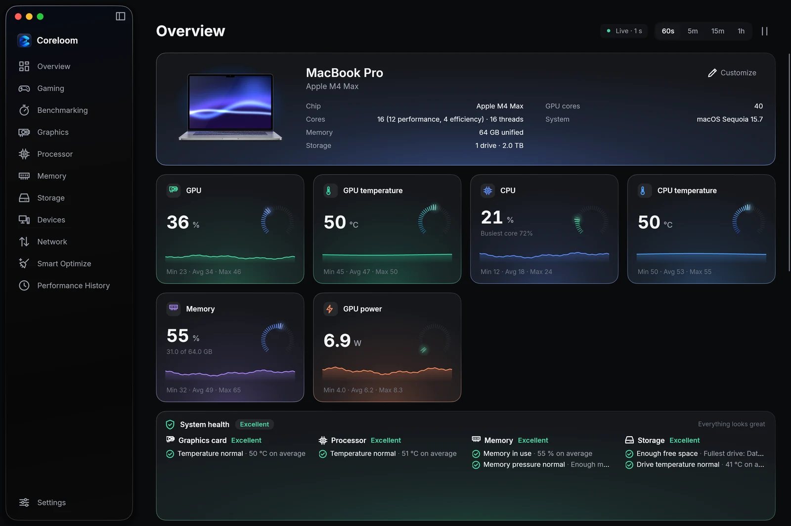
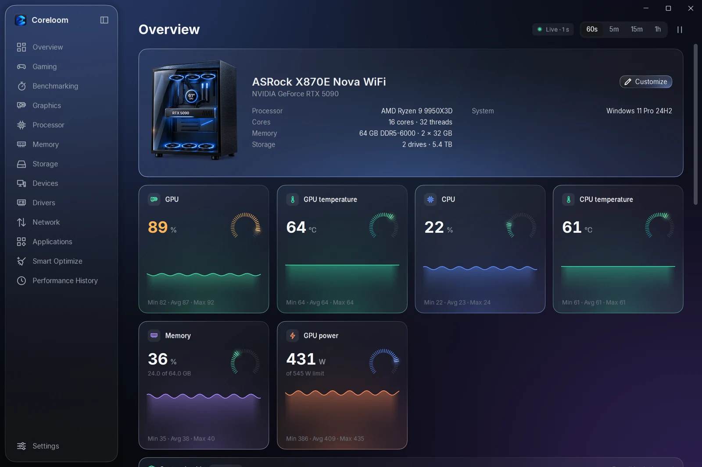
One app for the whole machine.
Built for macOS: Metal, Apple's own sensors and the menu bar, with your readings right at the top of the screen.
Built for Windows 11: NVML, Direct3D and the tray, with an in-game overlay that never touches your games.
Live dashboard
Processor and graphics load, temperatures, clocks and power; memory, storage and network, each with a health check you can read at a glance.
Gaming
Your Steam, Epic and other games in one library with Play, plus Game Mode, full power, keeping the Mac awake and Apple's Metal HUD.
Your Steam, Epic, Xbox and other games in one library with Play, plus Game Boost, the frame limiter and an in-game overlay.
Benchmarks
A processor benchmark with single- and multi-core scores, a graphics benchmark on MetalDirect3D, and a stress test that checks every answer.
Smart Optimize
One scan finds caches, logs and leftovers, checks your protection and the apps that start at login, and cleans up only what you tick.
Devices
Bluetooth accessories with their battery levels and names you choose, connect and disconnect in a click, and everything plugged in.
Alerts, everywhere
Notifications when a reading stays past your threshold, readings in the menu bar, and everything live on your phone.
Notifications when a reading stays past your threshold, readings in the tray, an in-game overlay, and everything live on your phone.
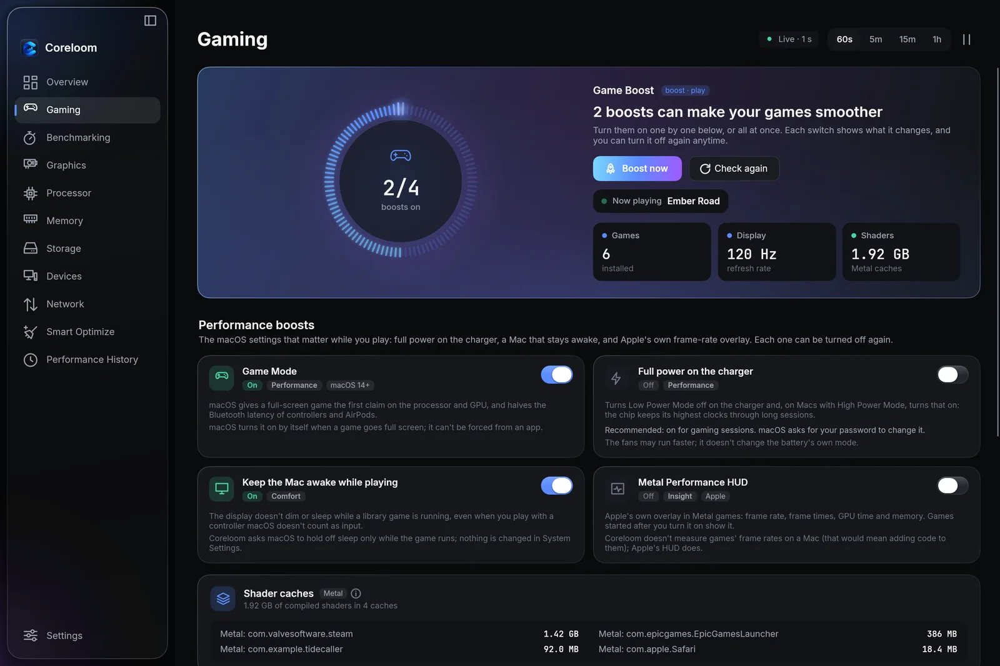
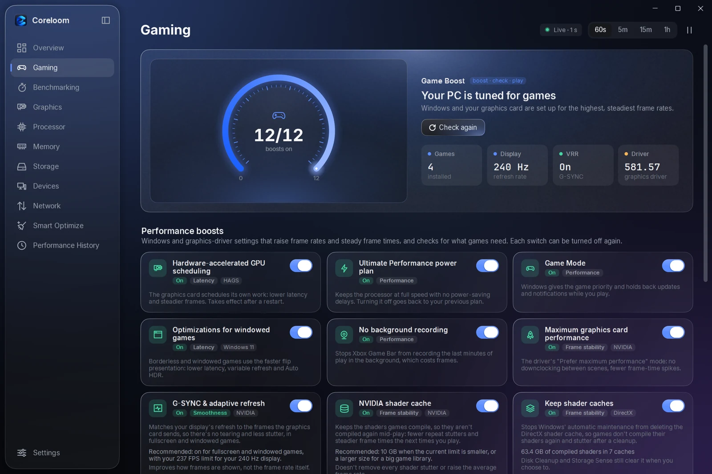
Every game, ready in one click.
Your library from every launcher, and the switches that matter before you press Play. Each one says what it does and turns off again.
- Game Boost. Game Mode, full power and keeping the Mac awake, all at once.Eight boosts, from the power plan to G-SYNC and the shader cache.
- Metal HUD. Apple's own frame-rate readout, on for the games you choose.Smooth frames. A frame limiter and an overlay with your frame times, without touching the game.
- One library. Steam, Epic and more, found on their own, plus any game you add.
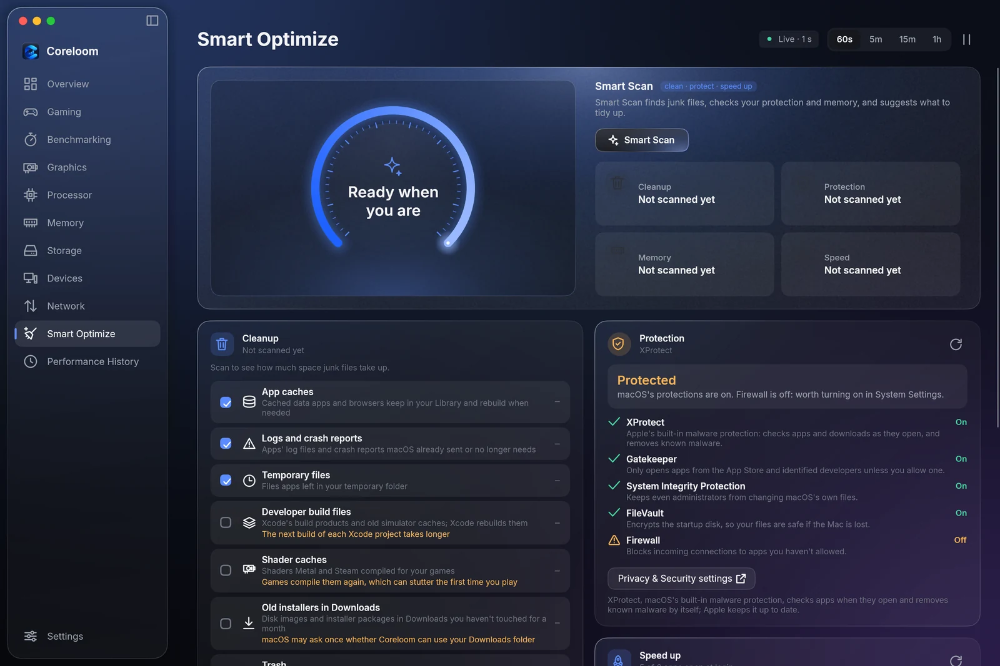
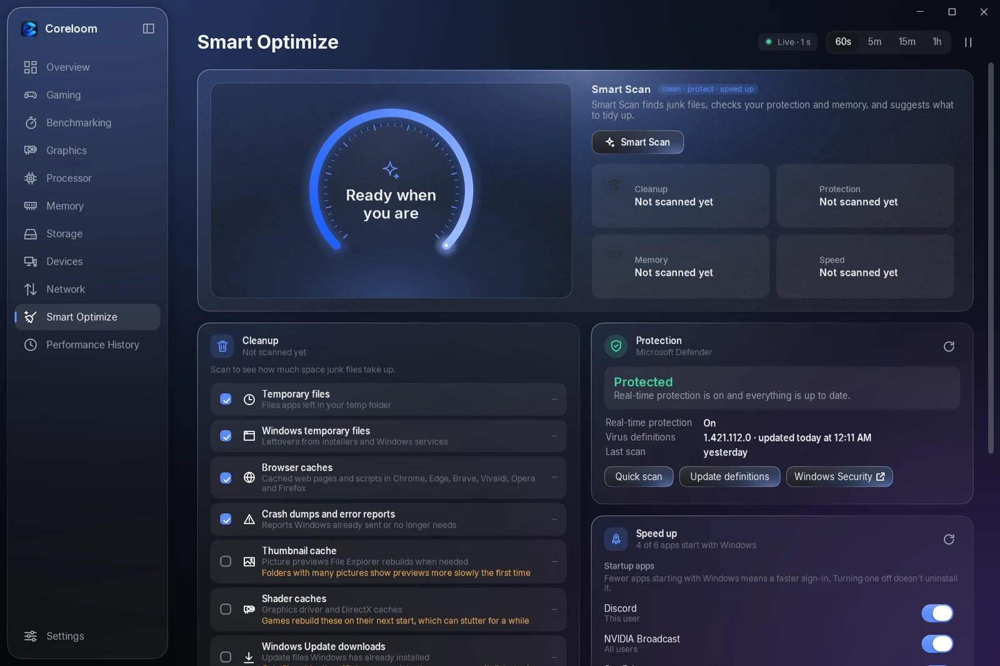
A lighter MacPC, on your terms.
One scan shows what's taking up space and slowing the start, then cleans only what you tick. Nothing is removed on its own.
- Clean-up. Caches, logs and leftovers, each with what it is and how much space it takes.
- Protection. macOS's own protection, checked and up to date.Microsoft Defender's status, with a quick scan a click away.
- A faster start. The apps that open at loginwith Windows, with switches to stop them.
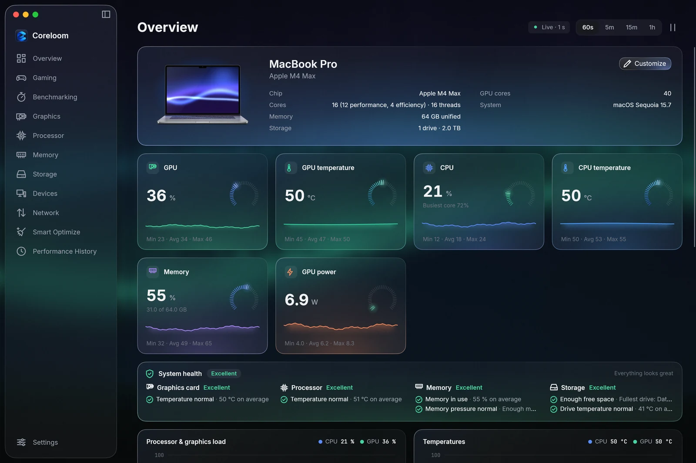
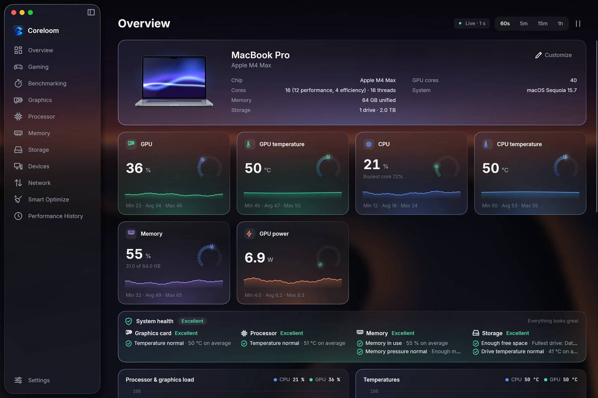
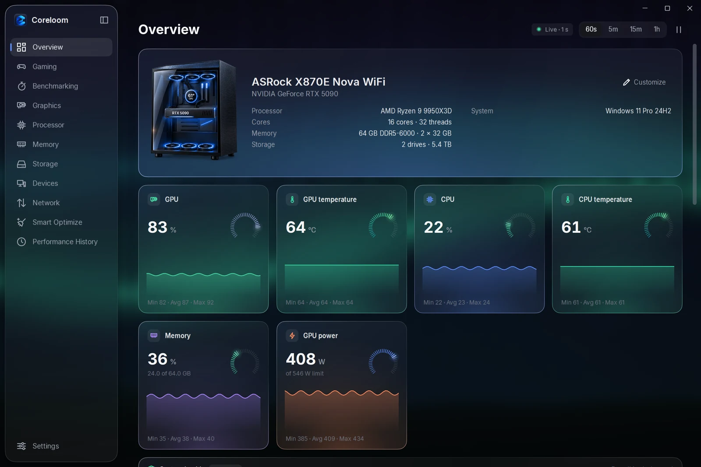
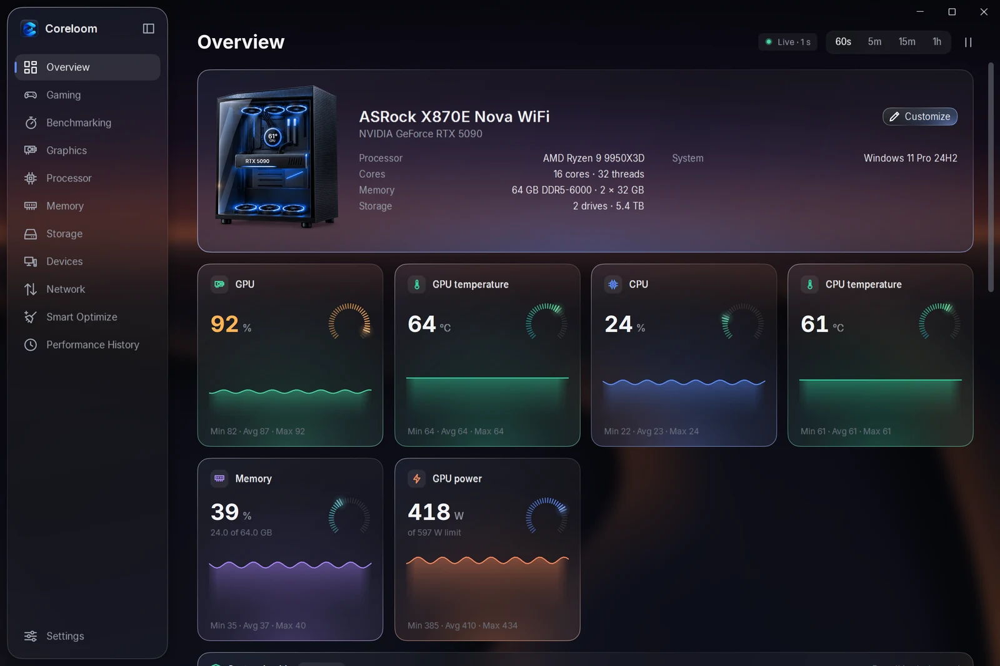
Your background, behind frosted glass.
Fill the whole window with a dark color, a gradient or a picture. The sidebar and every card are the same frosted glass, and each shows a soft copy of what's right behind it.
- Six pictures, or yours. Silk, Aurora, Nebula, Dunes, Bloom and Light trails, all drawn for Coreloom, or any picture of your own.
- Opacity and blur. Two sliders: how strongly the picture shows through, and how much the frosted glass over it blurs it.
- Colors and gradients. Eight dark colors, eight gradients, and Coreloom's own, which follows your accent.
Your readings, in the menu bar.
Pick the readings you want at the top of the screen: processor and graphics load, memory, temperatures, the fastest fan, network, storage, battery and power. Each sits in the menu bar as its own item, beside your clock.
- Your wallpaper on the MacBook. The Overview shows your Mac with its own desktop picture.
- Name your devices. Give your Bluetooth accessories names you'll recognize.
Settings › Menu bar shows a preview as you choose. ⌘-drag puts them in any order.
Your MacPC, in your pocket.
Turn on Settings › Connect, scan the QR code with your phone's camera, and your readings are live on your iPhone or Android phone, over your own Wi-Fi. No app store, no account, no cloud.
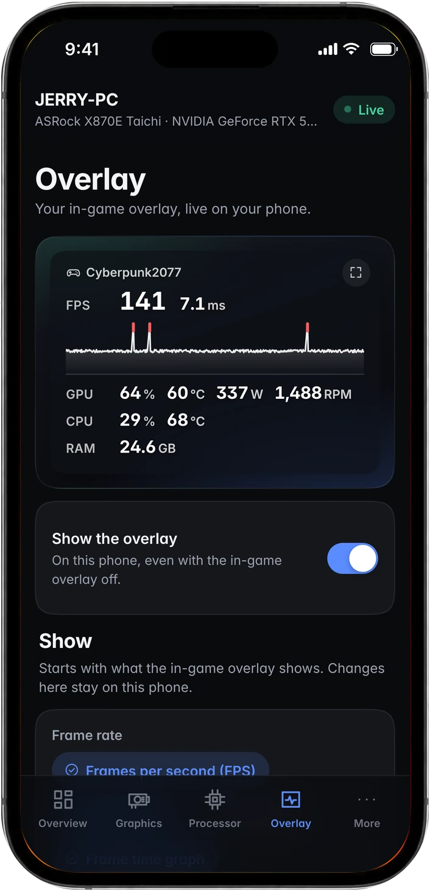
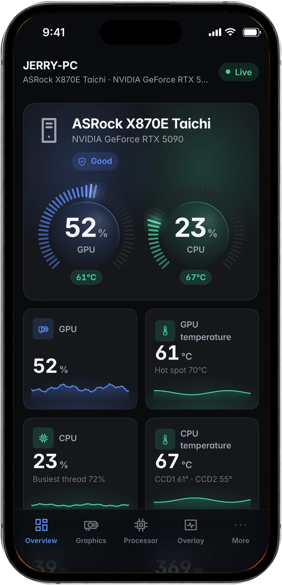
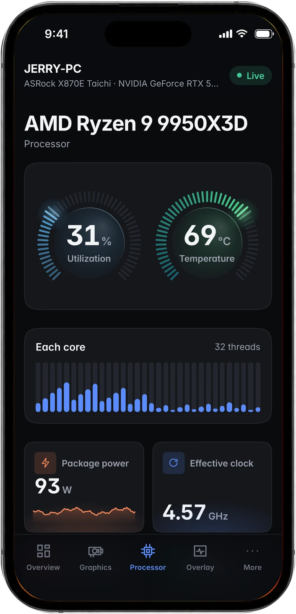
Live, every second
Gauges, two-minute charts and every core, in Coreloom's own design, light or dark.
Your overlay, beside your screen
The Overlay tab shows the game's frame rate and frame times, full screen if you like.
Private by design
Paired phones only, on private networks, with every reading encrypted. Phones can only look.
Pick your computer.
Every download is the latest version. Once installed, Coreloom keeps itself up to date, checking every update against its checksum first.
Mac with Apple silicon
Your MacM1, M2, M3, M4 and later.
- macOS 14 Sonoma or later
- Disk image (.dmg)
Mac with Intel
Your MacMacs with an Intel processor.
- macOS 14 Sonoma or later
- Disk image (.dmg)
Windows
Your PCWindows 11, 64-bit.
- Installer, no admin prompt to install
- Or the portable zip
Two minutes, then it updates itself.
Coreloom is free and open source, so it isn't sold through an app store.
Drag it into Applications
Open the downloaded disk image and drag Coreloom onto the Applications folder beside it.
Confirm the first opening
Open Coreloom from Applications. If macOS says it could not verify Coreloom, click Done, then open System Settings › Privacy & Security, scroll down and click Open Anyway.
That's it
Coreloom lives in the menu bar and the Dock. New versions arrive on their own: Coreloom › Check for Updates… installs one right away.
Run the installer
Open Coreloom-Windows-Setup.exe. It installs for you alone, so there's no administrator prompt.
Open Coreloom
It starts from the Start menu and sits in the tray. If SmartScreen warns the first time, choose More info › Run anyway: Coreloom isn't code-signed yet.
That's it
New versions arrive on their own. Settings › Updates shows what's new and installs an update right away.
It reads. It never meddles.
Good to know.
Is Coreloom really free?
Yes. It's open source under the MIT License, with no ads, accounts or paid tier. The code is on GitHub for anyone to read.
Does it change anything on my computer?
Only when you flip a switch, and each switch says what it does and turns off again. Monitoring is read-only: no overclocking, fan control or firmware changes.
Is it safe with anti-cheat?
Coreloom adds nothing to games. The in-game overlay is its own window, and frame times come from what Windowsthe system already records.
What does it send over the internet?
Nothing about your hardware. It asks GitHub for updates, and Cloudflare only while you run a speed test. Your phone talks to your computer over your own network, encrypted.
Which computers does it run on?
Macs with Apple silicon or Intel on macOS 14 Sonoma or later, and 64-bit Windows 11 PCs. The phone app works in the browser on iPhone and Android.
How do updates work?
Coreloom checks GitHub for new versions and installs them for you, after checking each download against the release's SHA-256 checksums. When one is waiting, Settings gets a red dot.
Your MacPC, in plain sight.
Free, open source and ready in two minutes.